By Scott Selfon, Audio Content Consultant, Xbox Advanced Technology Group
The Xbox Audio Creation Tool (XACT) attempts to address several recurring problems in audio development on a console system. The primary goal is to provide a high level sound management library that is optimized for the audio hardware of the Xbox™ video game system from Microsoft. To this end, XACT provides:
XACT is really composed of three connected parts:
This chapter of the best practices guide focuses primarily on the third element. It will walk through the various aspects of creating content using the XACT tool, from a composer or sound designer's point of view. There is an analogous chapter for developers, which discusses the XACT library, resource management, integrating XACT into a game engine, and other programmatic concepts.
When creating an audio solution for a game, it is important to understand which aspects are in the hands of the programmer and which are the responsibility of the composer or sound designer. To avoid confusion and potential responsibility "clashes," XACT attempts to provide a single way to perform most tasks. Properties and behaviors that are specified in content cannot generally be "overridden" programmatically, and conversely, the composer does not control resource management or dynamic pausing.
When initiating a project, the sound designer and the programmer decide on important cues, or trigger points, in the game. The composer will then create a sound (or perhaps multiple sounds, one of which will be chosen randomly to play) that that cue plays. More details on what a sound consists of will follow. For now, the programmer and the sound designer can go their separate ways.
The programmer's responsibilities:
Meanwhile, the sound designer or composer:
The XACT authoring tool and libraries are included with the Xbox Development Kit (XDK), which can be downloaded each month from Xbox Central. Note that there is a Minimum Installation option, which will install all of the audio tools without requiring programming tools like Microsoft® Visual Studio® to be on your machine.
You should also recover your Xbox Debug Kit or Xbox Development Kit each month with the latest version of the library. If you do not have a debug kit, contact your account manager (or contact content@xbox.com and we can help determine who your account manager is). The Xbox Remote Console Recovery Tool, also available on Xbox Central, is an application that runs on your computer (attached via a network or a crossover cable to your debug or development kit) and transmits an updated image to your debug or development kit.
Once your debug or development kit is recovered, you should notice a program in the XDK Launcher called Audio Console App (AUDCONSOLE). This is the basic Xbox-side tool for real-time sound and digital signal processor DSP effect auditioning. Also note your XDK's machine name and/or debug IP address (listed along the bottom of the Launcher frame). You'll need one of these two identifiers to connect your computer to the XDK for real-time auditioning.
After launching XACT, the first step is to assemble wave banks. A wave bank is simply a collection of wave files bundled together into a single larger file.3 You can specify per wave bank whether it is meant to be used in-memory (where all of the wave data will be loaded into the Unified Memory Architecture) or to be streamed from the DVD or hard disk (where only the currently playing parts of any waves are in memory, and the rest are read from disk as needed).
Streaming options are actually broken down even further. By default, every wave in a streamed wave bank will incur some latency when you start to play it, because it takes time to seek to the position of that wave on the disk and read the data into memory. While the actual latency can vary based on other processes accessing the disks, how far apart the data to be read is, and so on, hard disk reads will generally incur tens of milliseconds of latency, while DVD reads will be on the order of hundreds of milliseconds.4 However, you can specify for one or more waves in your wave bank to use primed (zero latency) streaming. With primed streaming, the beginning of the wave is loaded into memory when the bank is first registered.5 This means that the wave can start playing immediately, with ample time for the rest of the wave to be streamed in from the disk.
The process of creating a wave bank is fairly straightforward:
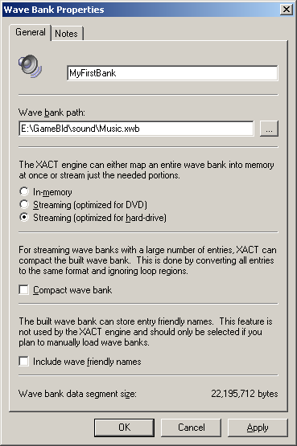
You can enter a name for your wave bank as well as the location where it will be built. Next you can choose the type of bank—whether it will consist of purely in-memory waves, or if it should be streamed from the DVD or hard disk. The Compact wave bank check box is useful for exceptionally large wave banks, such as dialog banks. If all content is the exact same format, this option will save space in how the wave bank is stored. The Include wave friendly names check box should be selected only if you plan to use this bank with your own playback engine (not using XACT).6
XACT provides the opportunity to do some basic "compression" on your PCM or AIFF wave data. By right-clicking on an individual wave (or selecting a group of waves), you can choose 8-bit PCM downsampling or Xbox ADPCM compression. If you audition the wave after choosing one of these options, you will hear it with the appropriate compression applied. Note that your source waves will not be altered; the compression is applied only for auditioning and in the final wave bank creation.
Other options are available on a wave. The primed (zero-latency) streamed waves mentioned earlier are also available for a wave or group of waves via the Enable Zero-latency Streaming command on the wave's shortcut menu, or via the property window that opens when you double-click a wave.
If a wave was imported with loop points, these are retained by XACT. If you know you will never hear the wave data beyond the end loop point (that is, you don't intend to use a release envelope), you can click Remove Loop Tail, again per wave, which will reduce your wave data size.
The last step to using a wave bank is to build it. When a streamed wave bank is built by XACT, it will automatically sector-align waves in a streamed wave bank to ensure optimized streaming performance. To build your wave bank(s), click Build on the File menu (or press F7). Or you can just wait until you've finished creating the sound bank as described below, and they will both be built together.
Tip Wave banks are generated from your original wave content every time you build the bank. So it's perfectly acceptable to keep editing your source waves using the sound editing tool of your choice. To keep the view in XACT current as far as file size and format, you can occasionally rescan your wave bank entries (SHIFT+F5). Wave bank entries are also automatically rescanned whenever the wave bank is built.
The next step is to construct sounds and cues, which comprise sound banks (.xsb files). Remember, cues are what the developer "triggers" (plays). With the possible exception of one global sound property (namely categories, which will be covered in shortly), the developer does not need to know anything about the sound or sounds that a cue uses.
First off, create a sound bank, much as you created a wave bank. Click New Sound Bank on the Sound Banks menu to open the property dialog box shown below:
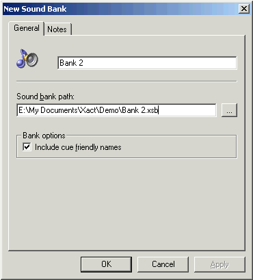
For now, keep the Include cue friendly names check box selected. Later on, your developer can refer to cues solely by their indices (numeric values), in which case this check box could be cleared to save some space in the file.9
When we click OK, the Sound Bank window opens. The window consists of four frames.
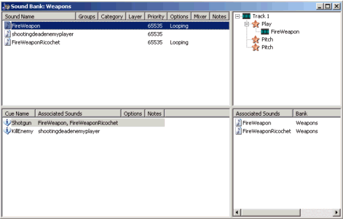
Illustration The Sound Bank window. The upper left frame displays all of this sound bank's sounds. The upper right frame displays all of the tracks and events for the currently selected sound. The lower left frame displays all of this sound bank's cues. And the lower right frame displays the sound or sounds that this cue is associated with.
As shown in the upper right frame, a sound is composed of one or more tracks. Each track can contain a single play event, and any number of other events (such as markers and filter sweeps). Each track of a sound will play only a single wave at any given time. For polyphonic sounds, you can create multiple tracks, each with their own play event, and again, each with as many other non-play events as you wish.
This example will start by creating the most basic sound, one that simply plays a wave.10 XACT provides a quick shortcut for this—simply drag a wave from a wave bank into the upper left frame of the sound bank. (Otherwise, you could create the sound manually by clicking New Sound on the Sound Banks menu or by pressing CTRL+D.) This creates a sound with the same name as the wave. The sound has one track with one play event, and the play event plays this wave.
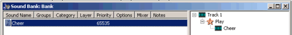
Illustration The sound "Cheer," as created from a wave of the same name.
Sounds can be organized in three ways:
If your sound is intended to be 3D positioned by the programmer, make sure to select Enable 3D on the 3D Properties tab of the sound's property page. The tab is available (and the sound can only be 3D positioned) only if all of the waves that the sound plays are mono. A 3D-positioned wave will be auditioned as if it were in front of the listener, sending to the environmental reverb as well as to the 3D position. The most commonly needed adjustments to the default properties will be minimum distance before rolloff and rolloff factor.11
You can loop your sound from the General tab of the property page. If your wave had loop points, a sound created by dragging that wave into the sound bank window will default to looping. Note that sounds using in-memory waves can either loop infinitely or not at all. Streaming waves can loop any number of times.
The rest of the sound property page will be covered in a moment.
So you've created a sound that plays a wave. The last step is to create a cue that triggers this sound. Remember, the cue is what the developer is going to play. Again, XACT provides a few shortcuts. First, if you drag a sound into the lower left frame, a cue is created for it automatically. Make sure you drag into an empty area, because this same drag action is used to replace the sound that an existing cue is associated with. Or as a super-shortcut, you can drag a wave into the lower left frame, which automatically creates both a sound playing the wave and a cue that plays the sound.
Opening up the cue's property window and clicking the Layering tab, you can specify how this cue will interact with other cues playing sounds on the same layer. Remember that sounds, and not cues, are assigned to layers. But the actual interaction (whether the new sound waits for the previous one to complete, or causes an immediate crossfade, for instance) is a property of the cues. As with sounds and waves, you can audition cues by highlighting them and playing them, either from their property window or from the Play button in the main XACT toolbar.
You now have a cue and a sound. You could build and deliver your wave bank and sound bank to the developer by clicking Build on the File menu and giving the developer the resulting .xwb and .xsb files.
A sound consisting of a single wave isn't going to make for particularly interesting audio. If you use multiple waves to create composite sounds, along with the real-time processing power of the Xbox Media Communications Processor,12 all of your sound effects can be more varied, complex, and realistic than a single wave file.
As discussed, each track allows for a single play event. However, there's nothing that says that the play event has to occur at the moment the sound is fired. Opening up the play event's property window (by double-clicking on it), you'll notice a Timestamp, in seconds box. Similarly, every other event allows you to schedule it for any time during the playback of the sound.
As an example, you could slowly pitch shift the wave up. Right-click on any event in a track, click Add Pitch Event, and a pitch event dialog window appears:
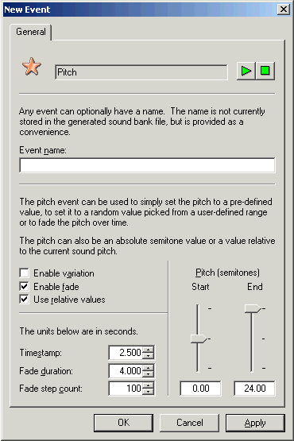
Illustration A pitch event that, starting at 2.5 seconds into the sound's playback, will sweep the pitch up two octaves over 4 seconds. The step count indicates that the actual pitch changes will be occurring every .04 (4/100) seconds. Use relative values means that the pitch shift will be in relation to whatever the sound's current pitch is, and not necessarily to the wave's original pitch. Otherwise, the pitch adjustment would trample over any previous pitch changes.
Similar events are available for all of the Xbox hardware parameters—per voice filter sweeps, low frequency oscillators, envelopes, and so on. There are also events for volume sweeps, speaker assignments,13 markers that a content creator can use to notify the developer of specific positions in the cue, and stop events (for stopping a playing wave at some predefined time in the future).
You can also create as many more new tracks as you like, either by clicking New Track on the Sound Banks menu or by dragging a wave into the upper right frame of the sound bank window. Again, each track supports a unique play event, and all of the other events placed on a track will modify only that particular track's waves.
So the cue is a little bit more interesting but still repetitive; every time the cue is triggered, you're going to hear the exact same sound, which is composed of the exact same sequence of waves and other events. Let's add some basic variation to our sound and cue.
The simplest form of variation for a sound can be found in the Mixer tab of its property window. Here you can set pitch and volume variation for a "simple" sound—one that consists of a single track. These settings will be applied across any waves that the sound plays. However, remember that they are applied additively with any per-wave pitch or volume settings that you specify, so relative volume and pitch will still be intact within a sound.
Many of the individual events have their own variation functionality. For instance, if you have multiple tracks, each track's play events supply similar settings to those in the Mixer tab of the sound. And numerous other events have an Enable variation check box, which turns their range sliders into variation ranges.
Of course, even more useful than randomizing how a wave is manipulated is to choose between several different waves for playback. You can drag multiple waves onto a play event to create wave variations. Every time this play event is encountered, a wave will randomly be chosen from the list. You can also weight the list of waves via the play event's property page (click the Weight button), so certain waves are played more or less frequently than others.
Getting a bit fancier, a looped play event that uses waves from a streaming wave bank will automatically, and with sample accuracy, start playing a new wave as soon as the currently chosen variation completes. This can be quite effective for non-repetitive music and ambience. The main restriction for this functionality is that all of the variations must be waves of the same format (sampling rate, channels, compression, and so on), and they must be streamed. Otherwise, whichever variation was chosen first will play looped (which in some cases might be the desired behavior anyway).
To add even more variability, a cue can randomly choose between multiple sounds, again with weighting. The easiest way to add sounds to a cue is once again to drag them into the lower right frame of the Sound Bank window. You can also add sounds individually via the cue property window (the Add button in the General tab), or replace the current associated sound(s) by dragging the sounds onto the cue itself. As with play events in sounds, you can assign the weighting for a cue's sounds from the cue property window.
The ability of cues to choose randomly between multiple sounds is actually one of the reasons for layers being assigned to sounds rather than cues. For example, a hockey title has a cue called "YellAtRef." The cue is associated with ten sounds, each of which is a single irate fan (perhaps with multiple variations within each sound as well). Now, there is another cue, called "YellAtPlayer," in which the same voice talent has nice things to say about their favorite player. Because the layer is assigned to the sound, and not the cue, if for some reason a character was yelling at the ref and then the same character yelled at the player, you wouldn't hear the same fan saying two things at once (assuming you assigned both of that fan's sounds to the same layer). Conversely, if the YellAtRef and YellAtPlayer cues picked two different fans, they would not cut each other off.
Now that our wave banks and sound banks have been completed, you can give them to the developer to get a first pass at integrating audio into the game. Delivering the sound bank and wave bank files is generally sufficient. However, if the developer wants to use cue indices rather than friendly names, make sure you build with the optional Build Project Header check box selected (this is the same option to use if your game uses wave banks without using the XACT engine). You might also want to choose Build Cue List, which will create a text file listing exactly which cues you have delivered (along with any comments you added in the property window for each cue's Notes tab).
One file that hasn't been discussed yet is the XACT project file (.xap), which is basically a text listing of everything in all of your wave banks and sound banks. You should definitely archive this file in case changes are required later in the project. And some developers will actually want to use this file to regenerate at least your sound banks in subsequent XDK releases. As the sound bank format can change from month to month, they should be rebuilt with each newly released build of the XDK library. A command-line version of XACT allows for developers to regenerate sound and wave banks without needing to use the tool (or open the project file).14
After you've created a bunch of cues and sounds, it would be really useful to hear how they interact with each other. Does the dialog cut through the ambience? Is the gunshot too loud? There are several ways to accomplish this-you could manually audition each sound yourself, watching the volume levels in the Audio Console application, and opening up each sound's property window to adjust its volume individually. But it's often easier to hear multiple sounds played at the same time, especially in the context of the actual game. If the game is compiled with the instrumented XACT library, you can mix your sounds in-game in real time using the Mixer Window.
Mixer windows are available for each sound group. Right click on a sound group in the Project Tree and choose Open Mixer Window. Now you should see your sounds appear in the window. You should also see a volume slider labeled with the name of the group. This will control the global volume of the entire group (while keeping sounds at the same volumes relative to each other). Incidentally, you can also control the global volume of a group by clicking on the group and then adjusting the volume slider in the Property frame.
In the "Simple" view, you have simple volume sliders for every sound. These sliders are all "live" and applied as the sounds are played. Switching to the "Complex" view, you get a bit more information, such as the ability to change each sound's parametric EQ settings and the ability to manually audition the sound. The play cursor will flash if the sound is currently being played (either via manual audition, or by the game itself, running on the Xbox). Note that all of these functions are also available in the Mixer tab of each sound's property window. The Mixer Window just brings them all together in an environment more conducive to audio level mixing.
Once you're done mixing your game, you should rebuild your sound bank with these new audio settings and give them to your developer. Even though you were auditioning them "live" in the game, the settings themselves are still only present in the XACT tool; they weren't being written to the banks on your debug kit's hard disk or anything along those lines.
The Audition Monitor window is a way to see exactly what cues are playing when as well as how your Xbox system resources are being utilized. The window also replicates the 5.1 digital and stereo analog volume monitors from the Audio Console Application, so you can monitor your in-game audio levels without needing the developer to add volume monitor bars.15 The Audition Monitor allows you to see when an unexpected cue might be called as well as if there's one cue that for some reason is never stopping.
The resource monitoring aspects of the Audition Monitor can be useful for determining how many voices you're using (and if you're getting close to running out). If you're noticing your streaming audio is breaking up, note how many streams are playing simultaneously as well as where they are located relative to each other on the game disc or hard disk. Note that the memory used box will generally only be useful if you are exclusively playing content from in-game; any auditioning from the computer tool will cause memory use to increase as temporary wave banks, sound banks, and cues are dynamically created.
A natural first question is whether sounds should be played from in-memory, streamed from the hard disk, or streamed from the game disc. Let's cover some of the basic differences between these techniques as well as how they will impact Xbox resources.
In-memory waves are loaded fully into memory when the wavebank is registered by the developer. As such, there's a one-to-one correspondence between your wavebank's size and your memory footprint. On the positive side, no disk bandwidth is incurred once the wave data is loaded, and wave looping will be performed in hardware, so no CPU hit is incurred once the wave starts playing.
Streamed waves reside on the disk even when the developer registers them, until they are played back. The exception is that any waves marked for zero-latency (primed) streaming (or manually primed by the developer via IXACTSoundBank::Prepare) will have several packets read into memory: three for non-looped waves, four for looped waves. For non-primed streamed waves, playback will use two packets for non-looped waves and three for looped waves. The size of these packets will depend on the dwPacketSizeInMilliSecs, decided by the developer, as well as the specific format of the individual wave. The packet size is rounded up to the nearest "sector size" (512 bytes for hard disk wavebanks, 2048 bytes for DVD). Note that the memory footprint will not vary with the length of the wave, so your waves can be as long as you want.
The read-ahead size will naturally need to be larger for the DVD (because seek time is so much slower), so any streams from the DVD will incur a larger in-memory footprint than streams from the hard disk. For this reason, the DVD is generally used for several non-primed streams (perhaps 5.1 music, ambience, and dialog), and the hard disk is used for primed as well as non-primed streams. As a note, several titles have already successfully exclusively used the hard disk for all of their audio playback (music, sound effects, dialog, and so on), without using the DVD or in-memory wave banks.
More limiting than memory footprint for streaming waves is disk bandwidth. Remember that the drive head must have enough time to seek to the wave and read in the next packet(s) of audio data for each wave that is playing. If other aspects of the game are using the hard disk and/or game disc, the bandwidth available for audio streaming will, of course, decrease. Bandwidth can be maximized by ensuring that all of the required data resides in the same general vicinity on the disk. For this reason, it's generally recommended that your streamed waves for a particular area of a game reside in a single streamed wave bank (or at least in adjacent wave banks).
There are also a few basic functional differences between streamed and in-memory waves:
Some kinds of sounds inherently require run-time control to function. For instance, a car engine is going to need to adjust its waves and their pitches based on gear, RPM, and so on. Rather than force the developer to implement how these values relate to sound behavior, the content creator can present run-time parameter controls (RPCs, also known as "sliders") that dictate how content will respond.
RPCs are currently available per sound, and an RPC's parameters can be applied with different settings per track in that sound. By opening a sound's property window to the Parameter Controls tab, you can see the list of RPCs your content exposes to the developer. To add a new RPC, click the Add button, which brings up this dialog:
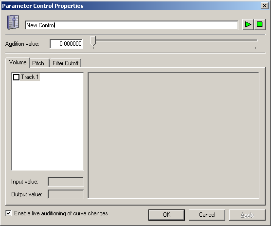
Illustration The run-time parameter control dialog
The top text box is where you can specify the name of the parameter as the developer will see it, similar to cue "friendly names." Below that is a slider control that will allow you to audition this run-time parameter control in real time. And below that are separate tabs for the three settings that you can currently specify per track: volume, pitch, and filter cutoff.
As a quick first example, let's say you've got the sound of a sword hitting a shield. You want to control the sound's behavior based on how hard the hit is. So you'll provide a run-time parameter control to the developer called "Force" or something like that. If the force applied is large, you want the sound to be louder and the filter to be opened up more. If the force applied is small, you want the sound to be quieter, and the filter to be closed (so the sound is more muffled).
First, enable the slider's control over volume and filter cutoff by checking the corresponding boxes for Track 1.
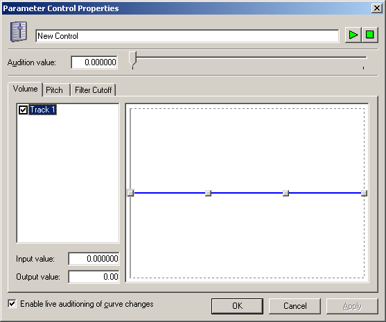
Illustration The enabled volume parameter for this RPC
The grids to the right become enabled and display four points. You can now grab these points and drag them around to create an arbitrary curve. You can look at the Input value and Output value text boxes to see what each point corresponds to. Again, you wanted volume to increase as the force increases. Let's start at –8 dB and then ramp up to full scale.
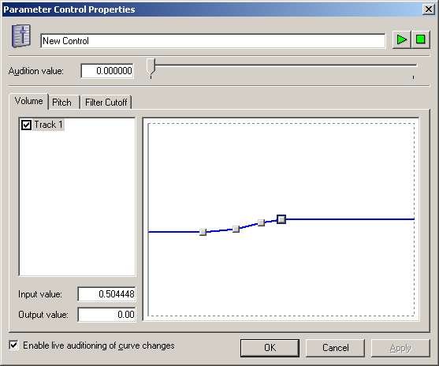
Illustration A mildly logarithmic-looking volume fade curve. Note that output value for volume ranges from –64.00 to +64.00, which corresponds to decibels.
Note that the range of the actual RPC (the "input value") is from 0 to 1. So the developer is going to need to translate his "force" value (which might be on some other arbitrary scale) to this range.
Let's do the same for the filter cutoff curve. Just for the sake of demonstration, this will be a slightly more dramatic and less smooth sweep.
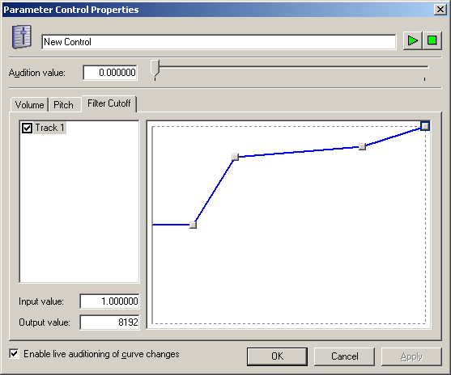
Illustration A possible filter cutoff curve: For very weak hits, the low pass filter cuts the wave off at nearly 0 Hz. Stronger forces will open up the filter cutoff, and extremely high force will open up the filter all the way to 8,192 Hz.
The four points can be placed in absolutely arbitrary positions; there's no rule that says a curve has to constantly move up or down. You could now audition this run-time parameter control via the Play button up at the top of the page. Moving the slider around, you'll hear the volume and filter cutoff adjust in real time, just as they will for the developer.
RPCs become really interesting when you can apply them to multiple waves simultaneously. Again, each RPC is attached to a single sound, so you're going to need to create a sound with multiple tracks. Let's do this example in the form of a car engine. The sound will have five different loops for the different gears, and then each of them will be pitch shifted up as the RPMs increase. By the way, this will be demonstrated in an upcoming XACTParamControl sample in the XDK.
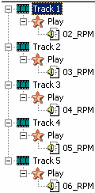
Illustration The event list window for our engine sound. Initially, it just plays all five RPMs at the same time.
So two different run-time parameter controls will be acting on our sound:
Create the sound with five tracks, one for each of the five RPM settings. Then go back over to the Parameter Control tab of the property page and add the "Gear" parameter. Note that this time, five tracks are listed in the parameter control dialog. Each one has a unique curve, displayed in a different color. Of course, if there's one track that you don't want to affect here (perhaps the in-car ambience, for instance), just uncheck that track, and the RPC won't influence it. As the gear slider goes up, you want to crossfade between the waves. So the curves might look something like this:
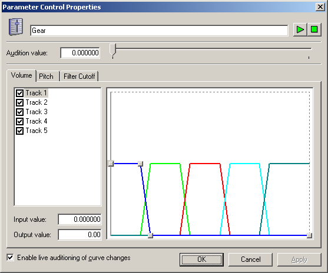
Illustration The volume curves for each track of the "gear" RPC. The curve whose points you can see is the lowest RPM track (track 1).
After clicking OK on that parameter control dialog, do the same thing for RPMs. Remember that within a single gear, you're only going to hear one track, but as the RPMs go up, you might want to use a slightly different pitch curve for each track. When you're done, you might have curves similar to these:
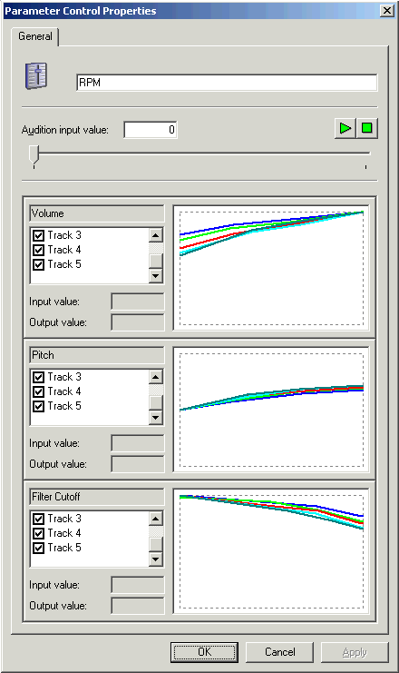
Illustration The curves for the five tracks that the RPM slider will influence
You can audition either of these settings individually, though not currently at the same time, which means you'll actually either hear all five engine loops simultaneously (while you audition RPMs) or one engine loop at a time at constant pitch (while you audition the Gear slider). Because multiple sliders tend to interact in game-specific ways, testing multiple simultaneous sliders can be performed by playing this sound in your title.
XACT tries to address some of the more common problems presented to audio developers and content creators. Beyond exposing the raw capabilities of the Xbox audio hardware in an easier-to-use interface, we've optimized the library to be as small as possible while providing a rich set of features and variable audio capabilities. As always, please let us know any feedback, positive or negative, that you have for the tool and library by sending an e-mail message to content@xbox.com.
For more information about topics presented here, please consult other chapters of the Xbox Audio Best Practices Guide, the Xbox Development Kit documentation, the white papers in the Audio Designer's Corner, or send an e-mail message to content@xbox.com.
1 In releases previous to the October 2002 XDK, xactengd.lib was not instrumented, and xactengid.lib was used if you desired a debug, instrumented XACT library. In current XDKs, the two libraries are both instrumented, and thus identical.
2 In releases prior to the October 2002 XDK, separate code was needed to use DSP Builder for real-time auditioning. It has since been incorporated into the instrumented XACT libraries. For more details on using DSP Builder and authoring DSP effects programs, see the white paper "Authoring and Auditioning Effects Programs."
3 If your development pipeline involves even higher level bundling of data, note that wave banks (and sound banks) can easily reside in other files. A developer registers wave banks using a file handle (or memory address) and an offset. So you don't need to use separate .xwb files to use XACT.
4 It is important to arrange the file structure on a DVD to avoid very expensive seeks such as those incurred by a layer change, or data reads that move the drive head from the innermost edge to the outermost edge of the disc. This should be arranged by the developer.
5 A developer can manually specify a sound to be primed by using the IXACTSoundBank::Prepare interface on a sound that plays a regular streamed wave. This is useful when, for instance, an animation needs to be synced to a sound, but you don't want that sound to be primed until you're just about ready for the visuals to occur.
6 For an example of wave bank use outside of the XACT engine, see the WaveBankStream sample in the XDK.
7 Multichannel (4.0 and 5.1) waves can be created using the wavmerge command-line tool. For more details, see Xbox Audio Content Development Tools.
8 Make sure any WMA files you create do not use digital rights management (DRM), because these files can be played only on the computer they were authored on. Also, note that WMA decompression is performed in software, so some CPU will be used to play each WMA stream.
9 Particularly for sound banks that have large numbers of cues (for instance, dialog in a sports title), using indices optimizes performance as well, because no string lookup is required. This is covered in more detail in the XACT Programming Best Practices chapter.
10 Sounds can actually be even more basic and consist of nothing at all. This is useful if you ever want to use a "silent" cue, or have not yet implemented sounds for your cues but want them integrated into your game.
11 For more details on rolloff and rolloff factor, see the white paper Keep On Rolling—Off, That Is: Manipulating How Xbox Attenuates Sounds with Distance. This is discussed in more detail in the XACT Programming Best Practices Chapter.
12 For more details on the full scope of audio manipulation features supported in hardware, see Best Practices for Xbox Audio Design: Chapter 3—Xbox Audio Hardware.
13 For more details on creating and using real-time DSP effects with custom mixbin configurations, see the white paper Authoring and Auditioning Effects Programs.
14 For a more detailed discussion of file handling and integrating XACT into your game build process, see the white paper Automating Xbox Audio Builds.
15 Shared code used by all of the XDK audio samples does demonstrate a quick implementation of such on-screen volume monitoring, if a developer wants to use it.
16 For more details on techniques for aligning loop points on ADPCM waves, see the white paper Authoring Loop Points for Xbox ADPCM-Compressed Waves.